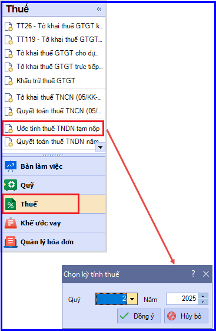
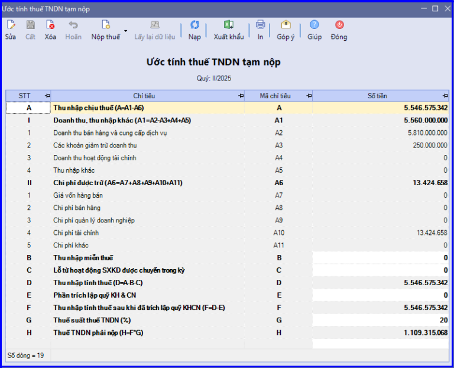
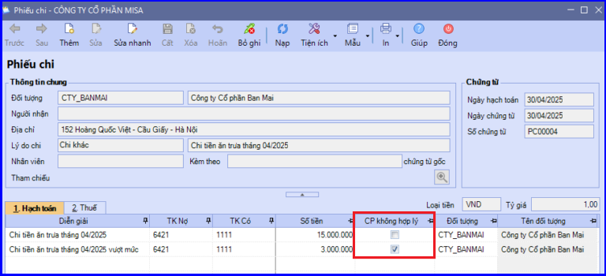
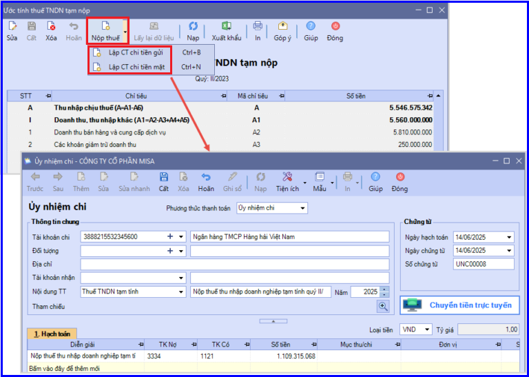

Hướng dẫn cách tính thuế TNDN tạm tính quý trên phần mềm Misa
Hướng dẫn cách tự động ước tính thuế TNDN tạm nộp trên phần mềm để không mất thời gian tính toán thủ công.
Xác định thu nhập chịu thuế:| Thu nhập chịu thuế | = | Doanh thu | - | Chi phí được trừ | + | Thu nhập khác |
| = | Tài khoản đầu 5 | Tài khoản đầu 6 + 8 | Tài khoản đầu 7 |
Lưu ý: Chi phí để đưa vào công thức xác định thu nhập chịu thuế là các khoản chi phí được trừ theo quy định của luật thuế TNDN. Chi phí không được trừ sẽ phải loại ra
Xác định thu nhập tính thuế:
Thu nhập tính thuế = Thu nhập chịu thuế - Thu nhập được miễn thuế (nếu có) - Các khoản lỗ được chuyển theo quy định (nếu có)
Xác định số thuế TNDN tạm tính phải nộp (DN không có phần trích KH&CN):
Thuế TNDN phải nộp = Thu nhập tính thuế x Thuế suất
Lưu ý:Trường hợp DN có số thuế TNDN nộp thừa ở kỳ trước thì nếu kỳ tạm tính phát sinh số thuế TNDN phải nộp thì thực hiện bù trừ số thuế TNDN đã nộp thừa đó vào kỳ tạm tính
Để tính ra được số thuế TNDN phải nộp tạm tính theo quý thì các bạn thực hiện trên phần mềm Misa như sau:
Vào phân hệ "Thuế" => Bấm chọn "Ước tính thuế TNDN tạm nộp" => Chọn kỳ tính thuế là "Quý muốn ước tính thuế TNDN tạm nộp" => ấn "Đồng ý"
Cụ thể như sau:
a. Chọn Quý muốn ước tính thuế Thu Nhập Doanh Nghiệp tạm nộp

b. Phần mềm sẽ tự động ước tính số thuế TNDN tạm nộp dựa trên các chứng từ hạch toán:
- Doanh thu (TK 511; 521; 515; 711)
- Chi phí (TK 632; 641; 642; 635; 811)
- Quỹ phát triển khoa học và công nghệ (TK 3561)

c. Một số lưu ý khi ước tính thuế TNDN tạm nộp:
- Khi hạch toán chi phí không được trừ, cần tích chọn cột Chi Phí không hợp lý để phần mềm có căn cứ loại ra khi xác định chỉ tiêu A6 - Chi phí được trừ.

- Chỉ tiêu B - Thu nhập miễn thuế: Tự nhập tay theo số thực tế phát sinh (nếu có).
- Chỉ tiêu G - Thuế suất thuế TNDN: Phần mềm đang ngầm định mức thuế suất phổ thông 20% (Nếu Doanh nghiệp đang được ưu đãi về thuế suất, cần sửa lại theo mức thuế suất thực tế).
- Chỉ tiêu C - Lỗ từ hoạt động SXKD được chuyển trong kỳ: Phần mềm đang lấy theo số liệu trên phụ lục 03-2A/TNDN (Chuyển lỗ từ hoạt động SXKD) của tờ khai quyết toán thuế TNDN năm trước liền kề
- => Nếu dữ liệu không liên năm/không lập tờ khai quyết toán thuế TNDN của năm trước liền kề thì Kế toán cần từ nhập tay chỉ tiêu C - Lỗ từ hoạt động SXKD được chuyển trong kỳ theo số liệu thực tế.
d. Có thể lập nhanh chứng từ chi tiền nộp thuế TNDN tạm nộp bằng cách:

KẾ TOÁN DIỆU TÂM chúc các bạn làm tốt!
=============================
Nếu bạn muốn thành thạo các kỹ năng làm kế toán trên phần mềm Misa
Thì bạn có thể tham khảo "Khóa Học Thực Hành Kế Toán Trên Phần Mềm Misa" tại Công ty đào tạo Kế Toán Diệu Tâm
Trong khóa học này, bạn sẽ được dạy cách lên sổ sách, lập báo cáo tài chính trên phần mềm Misa
Chi tiết về chương trình đào tạo bạn xem tại đây nhé: Khóa học thực hành kế toán trên Misa
=============================